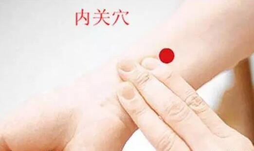

还是天气的原因，在这湿气夹杂着夜间寒气的清明之后，今天很多艾灸的灸友留言胃痛，而关于胃痛，其实不是一个简单的毛病，里面大有学问!今天我们就一次把胃痛说个清楚!
其实我们常说的胃痛，中医又叫做胃脘痛，具体是指以上腹胃脘部近心窝处疼痛为症状的病证，多由外感寒邪、饮食所伤、情志不畅和脾胃素虚等病因而引发。
胃痛，胃痛，那么当然，胃是胃痛的主要病变脏腑，但也常与肝脾等脏有密切关系。又因为胃气郁滞、失于和降是胃痛的主要病机，调理以理气和胃为主。
1、胃痛之名最早记载于《内经》，如《灵枢·邪气脏腑病形》指出：“胃病者，腹胀，胃脘当心而痛。”《内经》首先提出胃痛的发生与肝、脾有关，还提出寒邪、伤食致病说。
2、唐宋以前古医书多把属于胃脘痛的心痛和属于心经本身病变的心痛混为一谈，直至金元时代李杲《兰室秘藏》首立“胃脘痛”一门说法，将胃脘痛明确区分于心痛，使胃痛成为独立的病证。
3、明清时代进一步提出了胃痛的治疗大法，《医学正传》说：“气在上者涌之，清气在下者提之，寒者温之，热者寒之，虚者培之，实者泻之，结者散之，留者行之。”《医学真传·心腹痛》还提出了要从辨证去理解和运用“通则不痛”之法。
西医的急性胃炎、慢性胃炎、胃溃疡、十二指肠溃疡、功能性消化不良、胃黏膜脱垂等病以上腹部疼痛为主要症状者，属于中医学胃痛范畴。
引起胃痛的四大病因：
1、病邪入胃
外感寒湿热诸邪，侵犯于胃，都可致胃脘气机阻滞，不通则痛。其中尤以寒邪为多，此前咱们也有文章介绍过这点。
2、饮食伤胃
饮食不节，过饥过饱，损伤脾胃，胃气壅滞，不通则痛，这是最常见的情况，尤其是各种节假欢庆之时高发。
3、情志不畅
忧思恼怒，伤肝损脾，肝失疏泄，横逆犯胃，脾失健运，胃气阻滞，均致胃失和降，而引发胃痛，所以要注意控制情绪。
4、脾虚犯胃
脾胃是对兄弟，同为仓禀之官，主受纳运化水谷，若素体脾胃虚弱，运化失职，气机不畅或中阳不足，中焦虚寒，失其温阳而发胃痛。
胃痛辨证要点：
就如前几天咱们讲的艾灸要分阴阳一样，调理胃痛最好还是要会分辨虚实寒热!
胃痛的实症多痛剧，固定不移，拒按;虚症的疼痛多为徐缓，痛处不定，喜按。
遇寒则痛的不行，得温则痛减，为寒证;胃脘灼痛，痛的很急迫，遇热则痛不行，得寒则痛减，为热证。
那么我知道胃痛的虚实之后，如果来应对呢?很简单的，如果我们是用艾灸调理它，实证热证就多灸四肢，虚症寒症多灸躯干。
插一句，要注意区别胃痛与腹痛。
腹痛是指胃脘部以下，整个腹部疼痛为症状。而胃痛则是以上腹胃脘部近心窝处疼痛为症状。两者仅就疼痛部位来说，是有区别的。
但胃处腹中，与肠相连，因而在个别特殊病证中，胃痛可以影响及腹，而腹痛亦可牵连于胃，这就要从其疼痛的主要部位和如何起病来加以辨别。
止胃痛，护胃三剑客还不够!
我们曾经介绍过，治胃病可以艾灸上、中、下脘三个穴位，他们为“护胃三剑客”，并且这个三个穴位中，中脘穴是最重要的，也是最常用到的，可以说是胃病、胃痛必灸的穴位!
在腹部，肚脐上方5寸、4寸、2寸的地方有三个穴，分别叫做上、中、下脘。
然而，胃痛时仅灸中脘往往是不能够快速止痛的，所以，胃痛难忍是我们不妨再加上内关穴和足三里，同时艾灸这三大穴位，对于止胃痛来说往往更加快速!
这样艾灸，通气止痛!
额，别看咱们上面胃痛病因里面提到各种情况，但胃痛最主要的原因还是那句话——气机运化失常，不通则痛!请记住，经络不通，才是各种疼痛包括胃痛的基本原因。
既然我们的胃痛基本原因是不通则痛，那么我们艾灸调理胃痛时，可多灸中脘、内关、足三里，因为它们具有疏肝理气、温胃散寒、调补脾气、健中和肠的功效，往往能够快速的帮你缓解胃痛。
①详细艾灸步骤
悬灸：取舒适体位选准穴位后，一手拇食中如持笔写字状，将艾条点燃端对准穴位处，点燃端的艾头与穴位处皮肤距离约1寸左右，艾条与穴位局部皮肤成45度角。
②足三里：调理脾胃的明星穴
足三里堪称人体穴位中最耀眼的“明星”之一，不管是专家还是入门级的灸疗爱好者，无不知其“大名”。俗话说“人是铁饭是钢”，这和中医常说的“脾胃是后天之本”是相通的。没有了胃肠道的消化能力，五谷杂粮就不能转化为人体的气血，强身健体就无从谈起。
《灵枢·邪气脏腑病形》：“胃病者，腹胀，胃脘当心而痛，上支两胁，膈咽不通，食饮不下，取之三里也。”说的就是，足三里专治胃痛胃病!那么足三里在哪里呢?足三里位于膝眼外下四横指，它具有调理脾胃、补中益气、疏风化湿、扶正祛邪的功能。
现代医学研究证实，针刺、艾灸足三里穴，可以增强胃肠蠕动，提高多种消化酶的活力，增进食欲，帮助消化，所以民间有“常灸足三里，胜吃老母鸡”一说。另外，足三里在健脑、改善心功能、调节内分泌方面，也都有效果。平时按揉或艾灸此穴，对保健大有裨益。
③内关穴乃止痛大穴

内关最早见于《黄帝内经·灵枢·经脉篇》，为手厥阴心包经之络穴。认为有益心安神、和胃降逆、宽胸理气、镇定止痛之功。
内关穴，相信大家并不陌生，乃是止痛大穴。常按摩此养生穴位可宁心安神、宽胸理气、宣肺平喘、缓急止痛、调补阴阳气血、疏经脉等。
痛的不行，试试隔姜灸!
如果胃痛的实在不行，温灸见效又慢，不妨试试见效更快的隔姜灸!
采用隔姜灸的方式，将姜切成薄薄的片，如硬币那种厚度一般，中间用牙签穿刺数孔，处理好后放在穴位上，然后通过悬灸或者艾灸盒的方式来熏烤，通过热度的传递，将生姜汁中的热性成分渗入皮肤。
还可以把艾绒捏成艾柱，放在生姜上点燃，有局部灼痛感时，略略提起姜片，或更换艾炷再灸，一般灸每次灸5～10壮，这样可以最快速地达到止胃痛的目的。
【隔姜灸注意事项】
1、隔姜灸用的姜应选用新鲜的老姜，宜现切现用，不可用干姜或嫩姜。
2、姜片的厚薄，宜根椐部位和病证而定。一般而言，面部等较为敏感的部位，姜片可厚些;而急性或疼痛性病证，姜片可切得薄一些。
3、在施灸过程中若不慎灼伤皮肤，致皮肤起透明发亮的水泡，须注意防止感染，处理方法可参照无瘢痕灸法。
胃病胃痛，重在“养”!
有一个笑话是这样的，说现在做胃的健康方面的调查，不要调查谁有胃病，而是要调查谁没有胃病，这足见胃病的高发率了。所以市面上各种胃药也是层出不穷。但是面对这些奇奇怪怪的药品，你能了解它治疗的到底是哪种胃病吗?
调理胃痛，重在调养，而不是治疗。凡是有胃病的灸友，都要注意养成规律的生活与饮食习惯，忌暴饮暴食、饥饱不匀;胃痛持续且剧烈的时候，应在一定时期内进流质或半流质饮食，少食多餐，以清淡、易消化的食物为宜;
忌粗糙多纤维饮食，尽量避免食用浓茶、咖啡、烟酒和辛辣等，进食宜细嚼慢咽，慎用水杨酸、肾上腺皮质激素等西药。同时保持乐观的情绪，避免过度劳累与紧张，也是预防胃痛复发的关键!
原文出处：http://aiyijiu.github.io/article/215.html 更多艾灸资讯尽在艾易灸艾灸网！